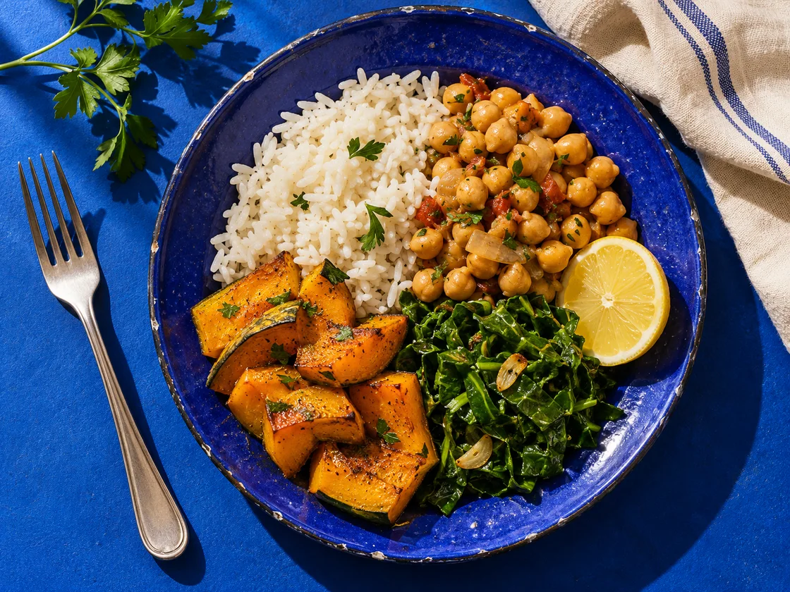

Quiz gratuito · 8 perguntas
Refeições da semana, por onde começar?
Responda sobre sua rotina e descubra três passos para facilitar as compras, as decisões e o preparo.
Começar meu quizPara adultos. Veja o resultado sem cadastro.

As respostas duram enquanto esta página estiver aberta. Atualizar reinicia o quiz.
Seu resultado
O resultado resume suas preferências de organização. O quiz tem finalidade educativa.